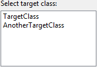

Options

The Extract Method refactoring provides a lot of configuration possibilities.| Option | Description |
|---|---|
| Select target class | All the classes which create an instance of the inlined class in their constructor are listed here and can be selected to be the target class. |